| id | arm | age | sbp_0 | sbp_12 |
|---|---|---|---|---|
| P001 | Placebo | 47 | 160 | 144 |
| P002 | Placebo | 59 | 162 | 156 |
| P003 | Placebo | 61 | 157 | 156 |
| P004 | Placebo | 48 | 157 | 163 |
BIOS 6301 · Introduction to Statistical Computing
Session 8
| Course arc | Sessions | |
|---|---|---|
| Setup and workflow | 0–2 | |
| Data foundations | 3–8 | ← today |
| Modern tools | 9–10 | |
| R programming | 11–13 | |
| Statistical computing | 14–16 |
Today’s deck develops one part of the current arc; later-session tools are named only when they clarify where this idea will be used.
1 Read base-R plotting code and produce a fast diagnostic panel with it.
2 Name the components of the grammar of graphics and map an existing figure onto them.
3 Build a plot in layers — distributions, comparisons, relationships, and uncertainty.
4 Control facets, scales, transformations, and position adjustments.
5 Apply the perceptual hierarchy and a colour-blind-safe palette on purpose.
6 Critique a figure against explicit criteria — including your own.
7 Export a publication figure reproducibly at a stated size and resolution.
| Block | Minutes | |
|---|---|---|
| 1 | Base R plots and annotations | 25 |
| 2 | Build a first ggplot | 12 |
| 3 | Choose displays for distributions and groups | 12 |
| 4 | Add summaries and uncertainty | 10 |
| 5 | Show repeated visits | 10 |
| 6 | Refine scales and display choices | 6 |
| 7 | Critique and improve a figure | 8 |
| 8 | Export and summary | 7 |
Figures are generated from R code when this deck renders. Optional reference slides provide extra examples for review.
All observations in this session are synthetic.
| id | arm | age | sbp_0 | sbp_12 |
|---|---|---|---|---|
| P001 | Placebo | 47 | 160 | 144 |
| P002 | Placebo | 59 | 162 | 156 |
| P003 | Placebo | 61 | 157 | 156 |
| P004 | Placebo | 48 | 157 | 163 |
sbp_0 and sbp_12 are systolic blood pressure at baseline and week 12, in mmHg.trial_long has one row per participant per visit, as in Session 7.| Question | Useful starting plot |
|---|---|
| What values and unusual observations occur? | Histogram or dot plot |
| How do participant values differ by arm? | Boxplot with individual points |
| How does baseline relate to follow-up? | Scatterplot |
| How does one participant change over time? | Connected points, grouped by ID |
| How many participants come from each site? | Bar chart of counts |
The same plotting function may answer different questions. Labels and the observation unit tell the reader which question you mean.
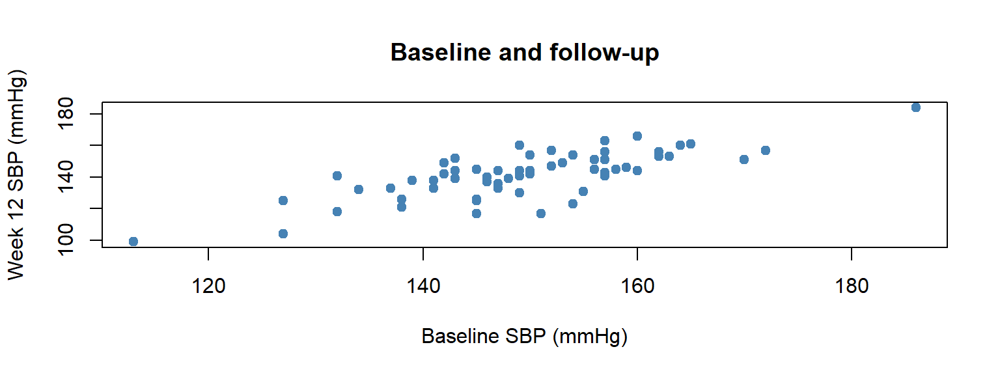
plot(x, y) puts the first numeric vector on x and the second on y.
| Argument | Meaning | Example |
|---|---|---|
pch |
Point symbol | pch = 19 for a filled circle |
col |
Colour | col = "steelblue" |
cex |
Symbol/text size multiplier | cex = 1.3 |
lty, lwd |
Line pattern and width | lty = 2, lwd = 2 |
xlab, ylab, main |
Axis labels and title | ylab = "SBP (mmHg)" |
xlim, ylim |
Display limits | ylim = c(90, 190) |
Use ?plot.default and ?par to look up options as needed.
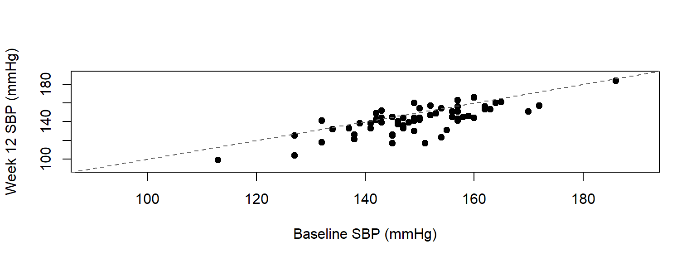
a is the intercept and b is the slope. Below the line, follow-up is lower than baseline. This line represents equality, not a fitted regression.
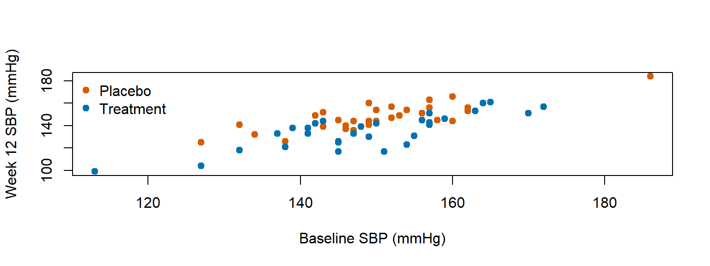
arm_col is a named vector: c(Placebo = "#D55E00", Treatment = "#0072B2"). Indexing it by arm assigns the same colour consistently.
| Creates a new plot | Adds to the current plot |
|---|---|
plot() |
points() |
hist() |
lines() |
boxplot() |
abline() |
barplot() |
text(), legend() |
For example, points(x, y, col = "red") adds observations to existing axes. Calling plot(x, y) again normally starts a new plot.
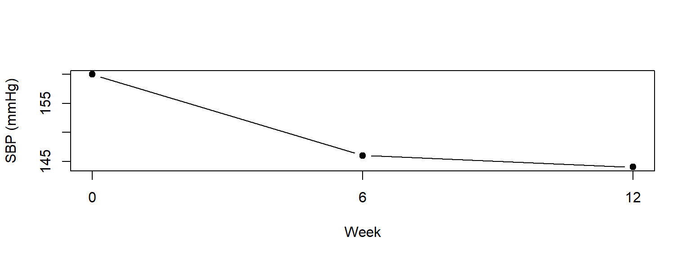
type = "p" draws points, "l" draws lines, and "b" draws both. Base R connects points in supplied order, so arrange time first.
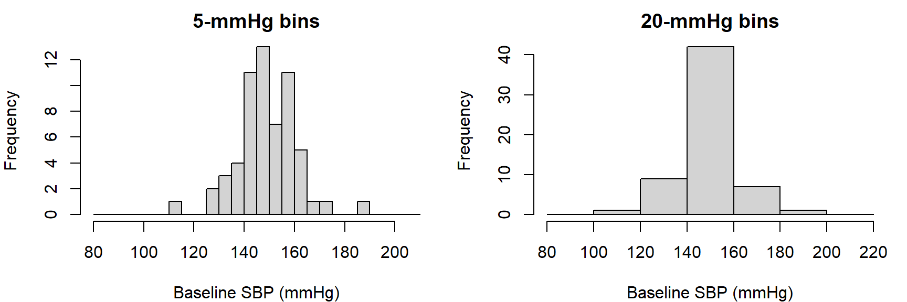
A vector in breaks specifies bin boundaries. A single number requests an approximate number of bins. A pattern should not depend on one convenient choice.
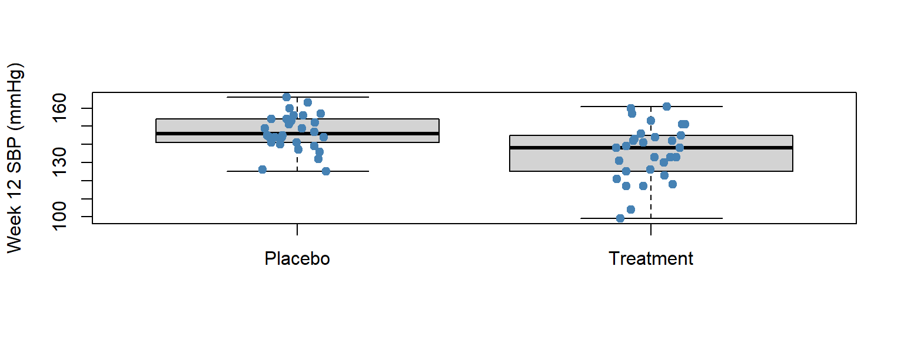
The formula outcome ~ group splits the outcome by group. The added dots expose individual variation. outline = FALSE avoids drawing extreme observations twice.
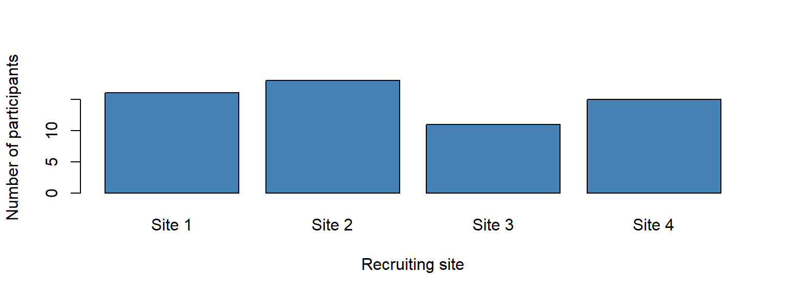
table() calculates the counts. barplot() draws their heights. A histogram instead bins a numeric variable such as blood pressure.
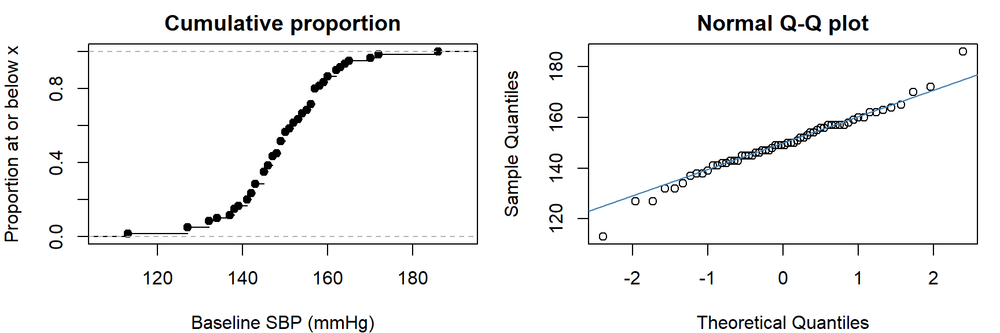
An empirical CDF needs no bins. A Q-Q plot compares sample quantiles with a reference distribution. A roughly straight pattern is not proof of normality.
par() affects the current graphics device.par(mfrow = c(1, 1)) resets the layout, but does not reset every other option.The file device receives drawing commands until dev.off() closes it. Use pdf("output/base-sbp.pdf", width = 6, height = 4) for vector output.
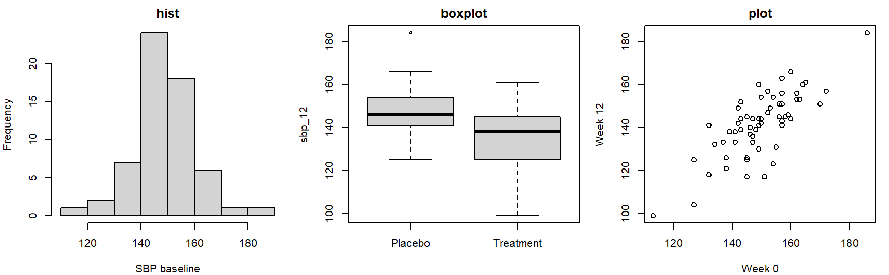
par(mfrow = c(1, 3)) splits the device into a 1 × 3 grid. It is device state: it stays set until you change it back.
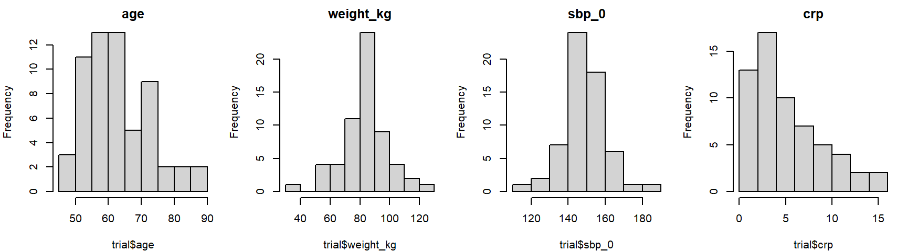
Four columns, one screen, five seconds. You are not making a figure — you are checking that the file is what you think it is. crp is right-skewed and you now know it before you fit anything.
col, xlab, and ylim.We will keep returning to the same synthetic blood-pressure study.
Question: How does baseline blood pressure relate to week 12?
We describe the data and its visual mappings, then choose how to draw it.
The first four determine the data shown in a layer.
| Component | In our study |
|---|---|
| Data | Participant records in trial |
| Aesthetics | aes(x = sbp_0, y = sbp_12) |
| Geom | geom_point() draws each participant |
| Stat | Points use raw values; a histogram counts bins |
Most early examples need only data, mappings, and a geom.
The remaining components control how the plot appears.
| Component | Role | Example |
|---|---|---|
| Scales | Translate values to positions or colours | Logarithmic y axis |
| Coordinates | Define the plotting space and view | Zoom into a region |
| Facets | Repeat a plot for subsets | One panel per site |
| Theme | Style non-data elements | Fonts and grid lines |
We will add these after the basic plot answers the scientific question.
Data and mappings establish the axes. The geom adds visible marks.
|> passes the filtered data into ggplot().+ adds plotting components to the ggplot object.+ at the end of a line when continuing the expression.ggplot(...) |> geom_point() does not mean “add a point layer.”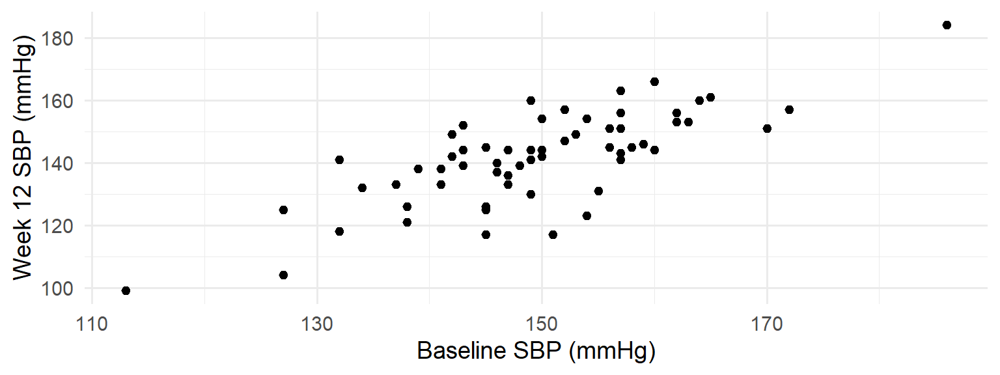
p_scatter + ... displays a revised plot. To keep that version, assign it: p_scatter <- p_scatter + labs(...).
aes() means map. Outside means setInside aes(): colour carries information, and you get a legend. Outside: colour is fixed, and this setting does not create a mapped legend.
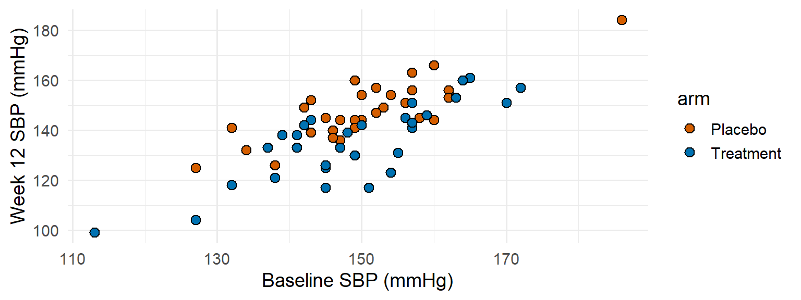
For shapes 21–25, fill controls the interior and colour controls the border. For most other point shapes, use colour. For bars, fill colours the interior.
We will keep the study data, but change the variables and marks.
A geom is a layer’s drawing method: points, lines, bars, text, or another mark. Some geoms also compute a default summary before drawing.
| Your data/question | Start with |
|---|---|
| Two numeric measurements per person | geom_point() |
| One numeric variable’s distribution | geom_histogram() |
| A numeric outcome across groups | geom_boxplot() plus points |
| Counts of records by category | geom_bar() |
| Heights already calculated in a table | geom_col() |
| Repeated measurements within a person | geom_line() with group = id |
The next slides list the exported geom_*() functions in the ggplot2 version used to render this deck, including aliases and older interfaces.
ggrepel::geom_text_repel(), are separate.stat_*(), scales, and themes are different function families.| Function | Purpose |
|---|---|
geom_point() |
One mark at each x/y location |
geom_jitter() |
Points with position offsets to reveal overlap |
geom_count() |
Point area represents the number at an x/y location |
geom_rug() |
Small marks along the plot margins |
geom_text() |
Text from a label variable |
geom_label() |
Text with a background box |
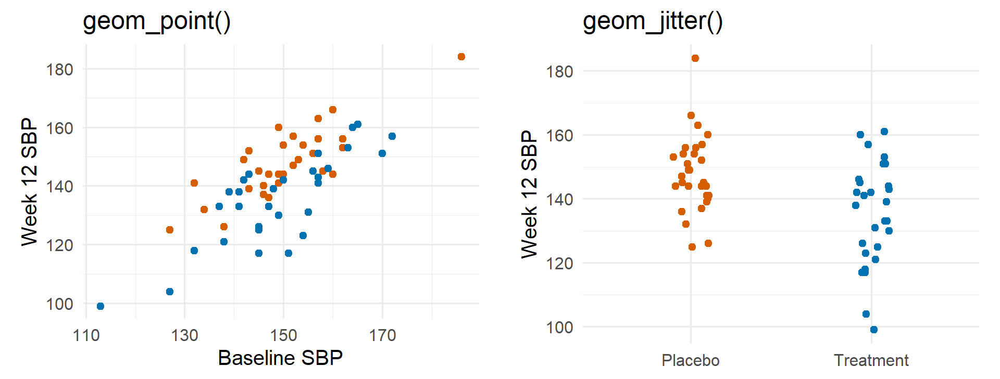
Points show a relationship between two measurements. Jitter separates overlapping observations within categories. Both show individual participants.
| Function | Purpose |
|---|---|
geom_line() |
Connect observations in x order within each group |
geom_path() |
Connect observations in their row order |
geom_step() |
Connect observations using steps |
geom_segment() |
Separate segments, with start and end coordinates |
geom_curve() |
Curved connections between endpoints |
geom_spoke() |
Segments specified by angle and length |
Connecting observations implies a relationship or order. It is usually inappropriate to connect unrelated participants just because their rows are adjacent.
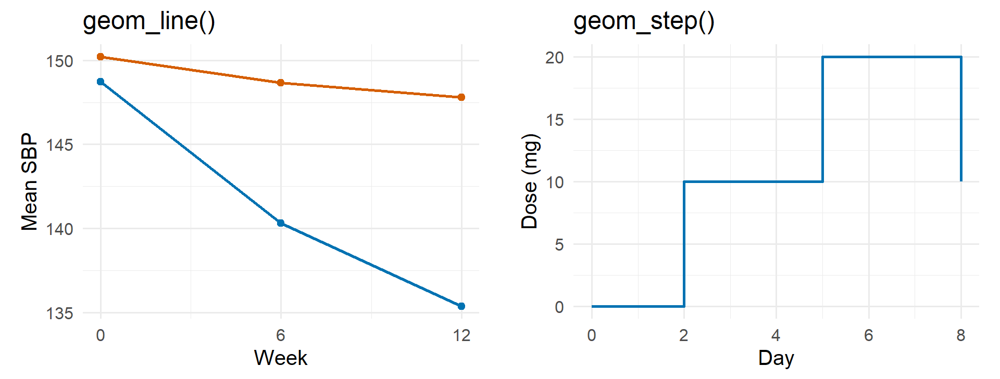
A line connects measured summaries. A step can represent a dose held constant until the next change. The right-hand schedule is a separate synthetic example.
| Function | Purpose |
|---|---|
geom_histogram() |
Counts or densities in numeric bins |
geom_freqpoly() |
A line through binned frequencies |
geom_density() |
A smooth estimate of a one-variable density |
geom_dotplot() |
Stacked dots in bins |
geom_boxplot() |
Median, quartiles, whiskers, and extreme points |
geom_violin() |
A mirrored density for each group |
geom_qq() |
Sample quantiles against reference quantiles |
geom_qq_line() |
A reference line for a Q-Q display |
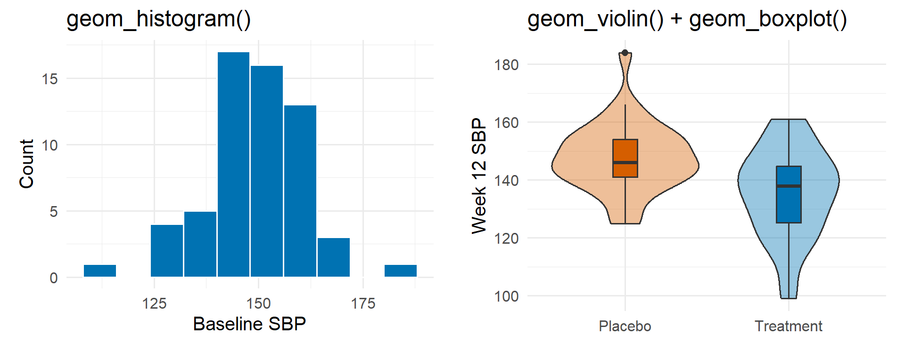
The histogram groups observations into numeric bins. A violin describes a smoothed distribution, while the overlaid box marks its quartiles and median.
| Function | Purpose |
|---|---|
geom_bar() |
Count records by category by default |
geom_col() |
Draw supplied y values as bar heights |
geom_area() |
Filled region to a baseline, stacked by default |
geom_ribbon() |
Region between supplied ymin and ymax |
geom_rect() |
Rectangles defined by boundary coordinates |
geom_tile() |
Rectangles defined by centres and dimensions |
geom_raster() |
Efficient equal-sized rectangular cells |
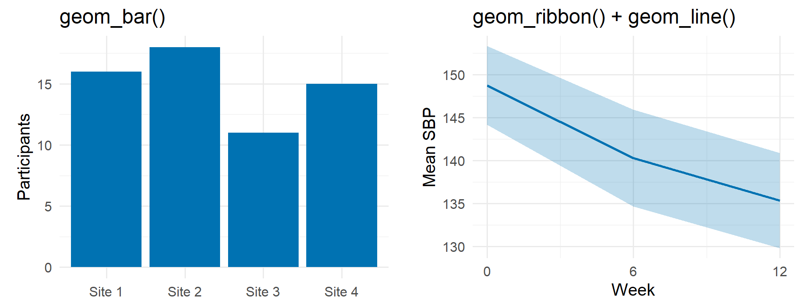
Bars show counts. The ribbon fills a supplied lower-to-upper range, here approximate 95% intervals for the treatment-arm mean at each visit.
| Function | Purpose |
|---|---|
geom_pointrange() |
Point estimate and interval |
geom_linerange() |
Interval alone |
geom_errorbar() |
Interval with end caps |
geom_crossbar() |
Central value across an interval box |
geom_errorbarh() |
Older horizontal error-bar interface (deprecated) |
For new horizontal error bars, use geom_errorbar(orientation = "y") with xmin and xmax. The plotting function does not determine whether your interval means SD, SE, or a confidence interval.
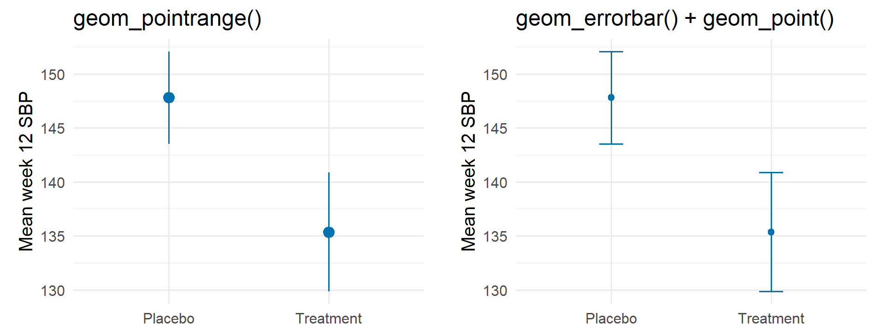
These show the same means and approximate 95% confidence intervals. Pointrange draws both marks; errorbar supplies the interval with end caps.
| Function | Purpose |
|---|---|
geom_smooth() |
Fitted trend with an optional uncertainty band |
geom_quantile() |
Conditional quantile regression lines |
geom_function() |
Evaluate and draw a supplied function |
geom_abline() |
Lines specified by intercept and slope |
geom_hline() |
Horizontal reference lines |
geom_vline() |
Vertical reference lines |
geom_blank() |
Invisible layer, useful for establishing scale ranges |
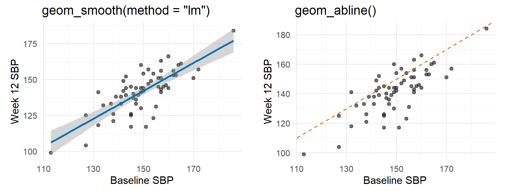
The fitted line summarizes a relationship in the data. The identity line marks equality between visits and needs no fitted model.
| Function | Purpose |
|---|---|
geom_bin_2d() |
Counts in rectangular x/y bins |
geom_hex() |
Counts in hexagonal x/y bins |
geom_density_2d() |
Contours of an estimated x/y density |
geom_density_2d_filled() |
Filled regions of an estimated x/y density |
geom_contour() |
Contour lines for supplied grid values z |
geom_contour_filled() |
Filled contour regions for supplied grid values z |
geom_hex() needs the hexbin package. Counts, estimated densities, and supplied surface values answer different questions.
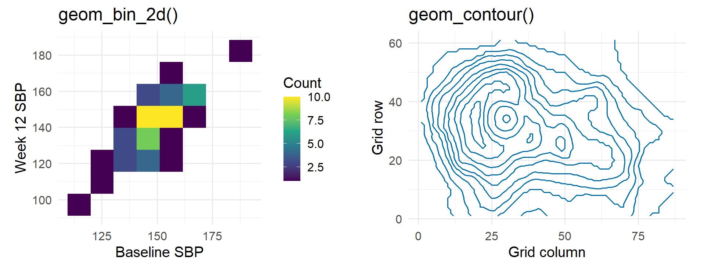
Left: counts of participants in x/y bins. Right: equal-value lines from R’s built-in volcano elevation grid. Contours require surface values, not just x/y pairs.
| Function | Purpose |
|---|---|
geom_polygon() |
Closed shapes from ordered vertices |
geom_map() |
Values joined to a separate map polygon table |
geom_sf() |
Geometry from an sf spatial object |
geom_sf_text() |
Text located using sf geometry |
geom_sf_label() |
Boxed text located using sf geometry |
The geom_sf*() functions use the sf package and spatial data structures. Spatial analysis is outside this session’s core material.
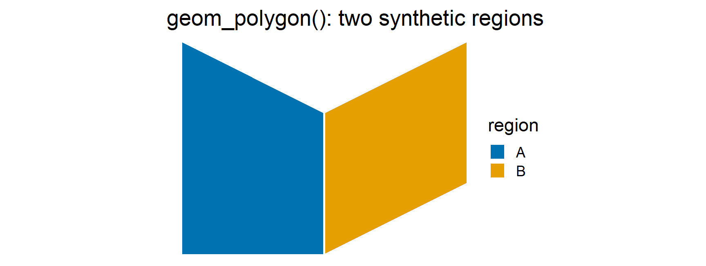
Each group supplies one shape’s vertices in boundary order. Real geographic work commonly uses geom_sf() with spatial geometry instead of hand-entered vertices.
| Function | Purpose |
|---|---|
geom_bin2d() |
Alias of geom_bin_2d |
geom_density2d() |
Alias of geom_density_2d |
geom_density2d_filled() |
Alias of geom_density_2d_filled |
This deck lists 53 exported names, including aliases, for ggplot2 4.0.0.
Use ?geom_point or the official reference for arguments. Newer releases may add functions. There is no need to install an extension package just to complete the core examples.
The catalogue shows the range of available marks. Now we use a small set to answer the study questions.
First question: What is the distribution of baseline SBP?
Compare a histogram’s bins with a density curve’s smoothing.
binwidth = 8 uses 8-mmHg bins. bins = 30 asks for a number of bins. Either choice needs checking: try alternatives and see whether the pattern persists.
The base R way: hist(trial$sbp_0) · plot(density(trial$sbp_0))
A boxplot shows the median, quartiles, whiskers, and possible outlying points. A violin shows an estimated density. Neither displays the sample size by default.
The base R way: boxplot(sbp_12 ~ arm, data = trial)
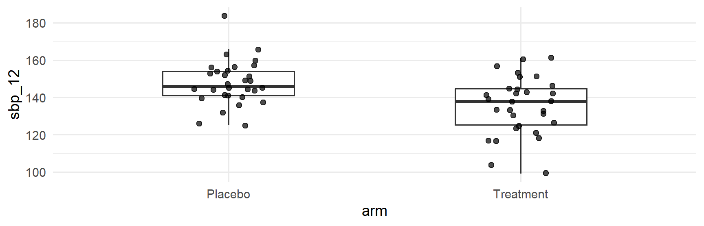
outlier.shape = NA stops the boxplot drawing outliers that geom_jitter() already drew. Two marks for one observation is a real error, not a style choice.
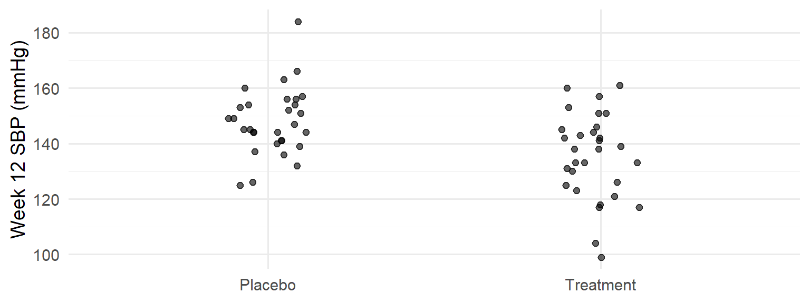
Horizontal jitter separates tied marks. height = 0 preserves the measured outcome, and seed makes the offsets repeatable. Alpha reduces visual overlap.
| arm | n |
|---|---|
| Placebo | 30 |
| Treatment | 30 |
Both give the same counts here. A mean or percentage already stored in y usually calls for geom_col(), not the default geom_bar() statistic.
position = |
Shows | Good for |
|---|---|---|
"stack" (default) |
Counts, one bar per group | Totals |
"dodge" |
Counts, side by side | Comparing subgroups |
"fill" |
Proportions, all bars to 1 | Composition — but hides n |
Question: What is the average week-12 SBP in each arm, and how uncertain is it?
The raw data and summary layers have different observation units.
| Interval | Describes |
|---|---|
| Mean ± SD | Spread of individual measurements around their mean |
| Mean ± SE | Estimated sampling variability of the mean |
| Confidence interval | Uncertainty about a population parameter under a model |
| Prediction interval | Uncertainty about a new individual observation |
The same geom_errorbar() can draw any of these. Its inputs do not tell the reader which one you intended. State the meaning and method in the caption.
The earlier mean ± 1.96 * SE examples use an approximate 95% confidence interval. The longitudinal ribbon gives intervals at each visit, not a model of change.
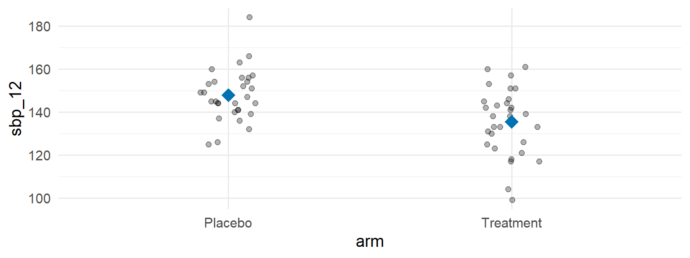
Grey points use participant data. Blue diamonds use the summary table. inherit.aes = FALSE makes the summary layer use only its own mappings.
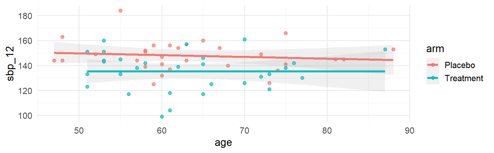
method = "lm" specifies a linear fit. With method = NULL, ggplot2 chooses loess or GAM according to the largest group’s size. The band describes uncertainty in the fitted mean, not a prediction interval for an individual.
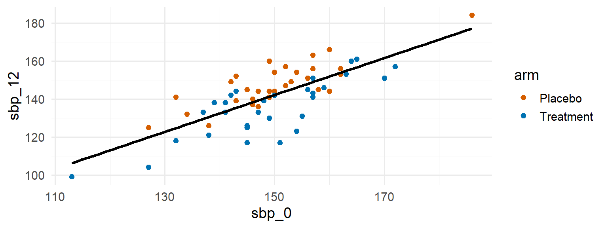
Colour belongs only to the points here. The smooth uses all participants together. Putting colour = arm in the global aes() would fit one line per arm.
Question: How does blood pressure change over the three visits?
trial: one participant, with visits in separate columns.trial_long: one participant at one visit.id, week, and sbp.Session 7’s wide-to-long reshape makes these plots easier to specify.
| id | arm | week | sbp |
|---|---|---|---|
| P001 | Placebo | 0 | 160 |
| P001 | Placebo | 6 | 146 |
| P001 | Placebo | 12 | 144 |
The first participant contributes three rows. Their shared id tells the plot which measurements belong together.
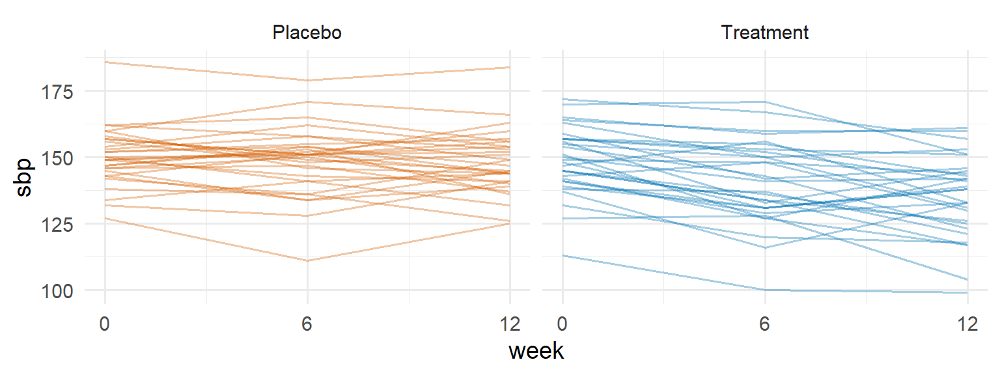
colour = arm alone would define only two colour groups. group = id tells the line layer to connect each person’s own measurements.
route <- data.frame(x = c(1, 3, 2), y = c(1, 2, 3))
routes <- rbind(transform(route, display = "geom_line"),
transform(route, display = "geom_path"))
ggplot(routes, aes(x, y)) +
geom_point(size = 3) +
geom_line(data = subset(routes, display == "geom_line")) +
geom_path(data = subset(routes, display == "geom_path")) +
facet_wrap(~ display)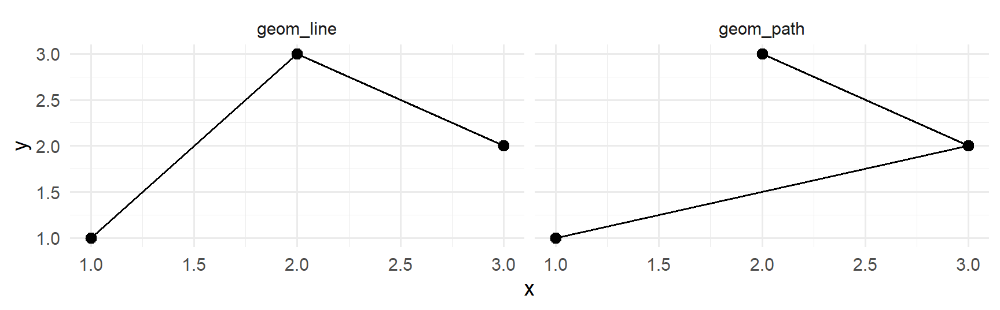
geom_line() sorts by x within each group. geom_path() follows row order, which is useful for an ordered route through space.
by_week <- trial_long |>
group_by(arm, week) |>
summarise(m = mean(sbp), se = sd(sbp) / sqrt(n()),
.groups = "drop")
ggplot(by_week, aes(week, m, colour = arm, fill = arm)) +
geom_ribbon(aes(ymin = m - 1.96 * se, ymax = m + 1.96 * se),
alpha = 0.2, colour = NA) +
geom_line(linewidth = 1) +
scale_x_continuous(breaks = c(0, 6, 12))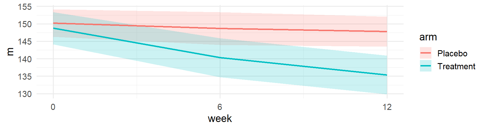
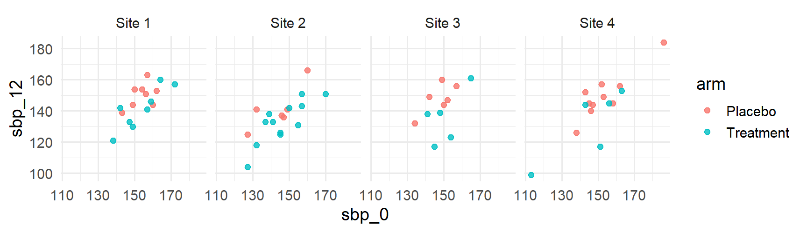
facet_wrap(~ x) wraps one variable into panels · facet_grid(a ~ b) makes a matrix of two · scales = "free_y" lets each panel set its own axis, which breaks comparability.
Our plot already answers a question. Now consider how readers will interpret it.
scale_y_log10() transforms the scale and keeps the axis in original units. aes(y = log10(crp)) transforms the data and labels the axis log10(crp). Prefer the scale.
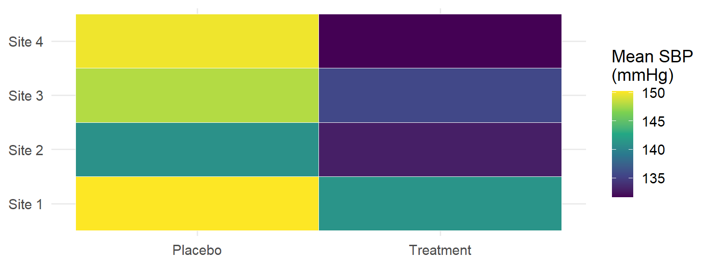
Each cell represents a site/arm summary. Heatmaps show patterns across many combinations; a dot plot is easier for precise comparisons of a few estimates.
| Symptom | First check |
|---|---|
| Unexpected colour legend | Did a constant go inside aes()? |
| One line connects different people | Is group = id specified? |
| Bar heights are unexpected | Does the geom count rows or use supplied y? |
| “Removed rows” warning | Missing values or scale limits? |
| Labels or layers disappear | Axis limits, layer data, and inherited mappings |
| Plot does not appear after assignment | Print the saved plot object: p |
Read the warning and inspect the relevant data before using na.rm = TRUE to suppress a message.
How accurately a reader can decode a quantity, best first:
| Rank | Channel | Use it for |
|---|---|---|
| 1 | Position on a common scale | The number that carries your argument |
| 2 | Length | Second choice; needs a zero baseline |
| 3 | Angle, slope | Trends, reluctantly |
| 4 | Area | Rough magnitude only |
| 5 | Colour intensity, saturation | Broad patterns or a third variable |
For precise comparisons, prefer positions on a shared axis. Colour remains useful for group identity and for patterns across large matrices.
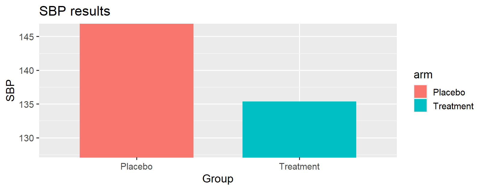
Take thirty seconds. Name three things.
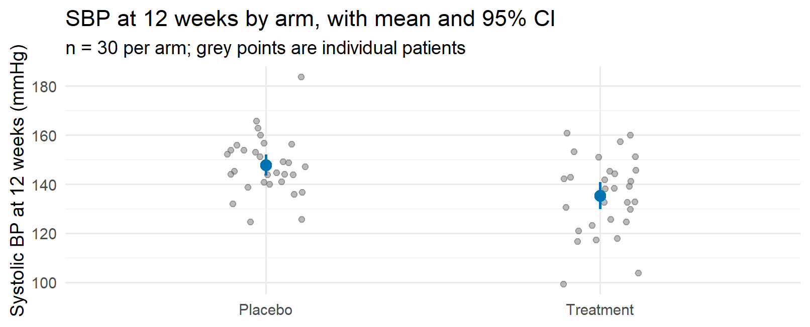
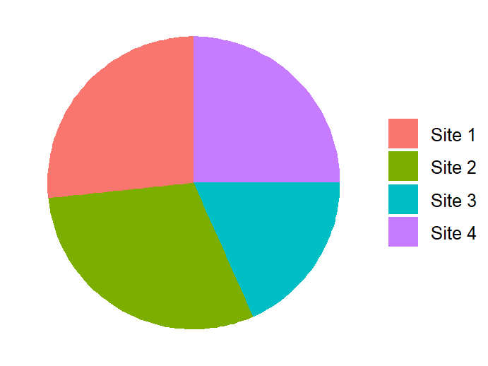
Pie charts ask the reader to compare angles and areas — ranks 3 and 4. Rank the four sites from that. Now imagine a bar chart.
Dual axes are worse, because the reader cannot check them:
The crossing point is set by your choice of scaling. Two facets, or two panels, say the same thing without the implied claim.
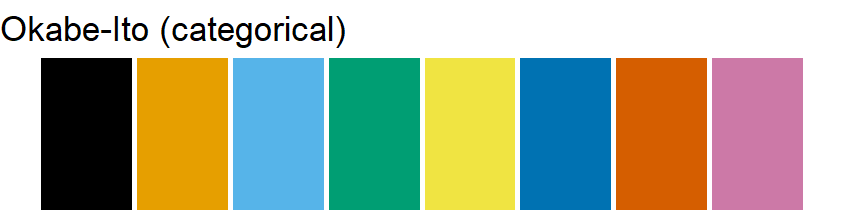
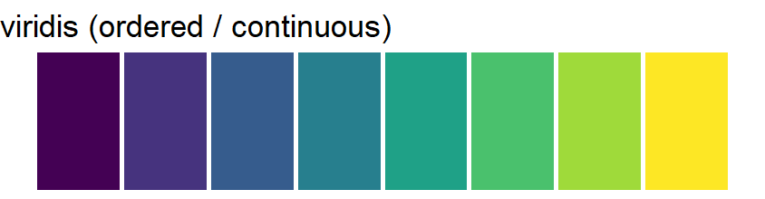
# categorical - built in to R since 4.0
palette.colors(8, "Okabe-Ito")
#> #000000 #E69F00 #56B4E9 #009E73 #F0E442 #0072B2 #D55E00 #CC79A7
scale_colour_manual(values = palette.colors(3, "Okabe-Ito"))
# ordered or continuous - built in to ggplot2
scale_colour_viridis_d() # discrete
scale_fill_viridis_c() # continuousThen print it in greyscale. If the groups stop being distinguishable, colour was doing work that shape or a direct label should have been doing.
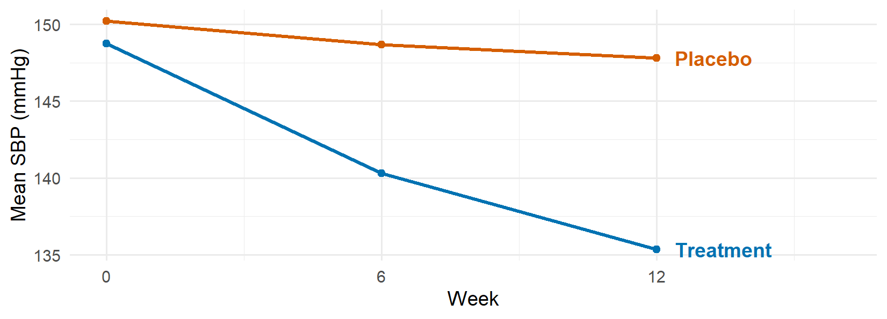
A legend makes the reader look away, decode, and look back — for every series. A label next to the line costs them nothing.
Every mark on a figure is either carrying information or competing with it.
| Remove | Because |
|---|---|
| Heavy grid lines, panel background | They are as visually loud as the data |
| A legend that repeats the x axis | Zero information |
| A third dimension on a 2-D quantity | Distorts area and hides marks |
| Decorative colour | Spends the strongest labelling channel on nothing |
| Gridlines on a categorical axis | There is nothing to read off |
theme_minimal() gets you most of the way for free. The rest is deletion, and the test is: remove it. Did the figure lose anything?
labs() and a themep_final <- ggplot(trial, aes(arm, sbp_12)) +
geom_jitter(width = 0.12, alpha = 0.45, colour = "grey40") +
geom_pointrange(data = by_arm,
aes(y = mean_sbp,
ymin = mean_sbp - 1.96 * se,
ymax = mean_sbp + 1.96 * se),
colour = "#0072B2") +
labs(x = NULL, y = "SBP at 12 weeks (mmHg)",
caption = "Mean and 95% CI. n = 30 per arm.") +
theme_minimal(base_size = 13)
p_final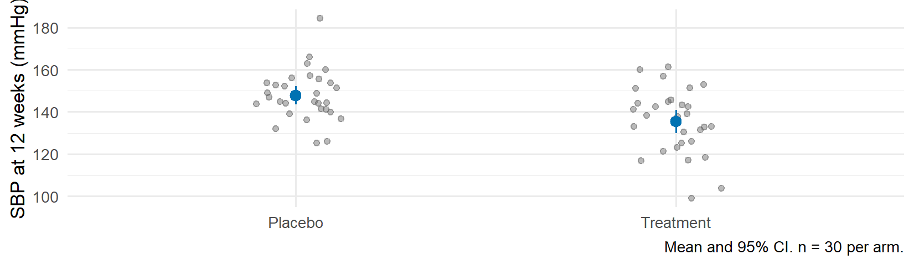
ggsave(), with the arguments filled in| Argument | Leave it out and you get |
|---|---|
width, height |
The last size of your plot pane. Irreproducible by construction |
dpi |
300 by default, but state it — reviewers ask |
bg |
Background comes from the plot theme and may be transparent |
.pdf / .svg extension |
Vector marks scale without pixelation; embedded raster layers still have finite resolution |
Right-click, copy, paste into Word.
Nothing records what produced it. The data changes, the figure does not, and no warning appears anywhere.
ggsave() in the documentThe figure is regenerated when its code executes during rendering.
The script records the data and plotting steps. Check data versions and caching settings so the figure stays aligned with the analysis.
A pasted figure is the same class of error as a number typed by hand — and it is harder to spot, because a stale figure still looks like a figure.
patchwork: several panels, one figure| side by side · / stacked · plot_annotation(tag_levels = "A") labels the panels A, B, C the way a journal wants them.
Optional extension package: install.packages("patchwork") if needed.
Next connection: Session 9 introduces Positron and GitHub Copilot; course-approved AI use begins only under that session’s policy.
The geom catalogue records the local package version and checks that every exported geom_*() name has an entry when the deck renders.
BIOS 6301 · Session 8 · Visualization